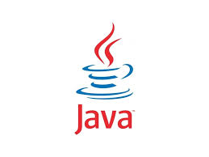

Eva Georgieva, Mike Sheridan, and Patrick Naughton initiated the Java language project in June 1991. Java was originally designed for interactive television, but it was too advanced for the digital cable television industry at the time. The language was initially called Oak after an oak tree that stood outside Gosling's office. Later the project went by the name Green and was finally renamed Java, from Java coffee, a type of coffee from Indonesia. Gosling designed Java with a C/C++-style syntax that system and application programmers would find familiar.
